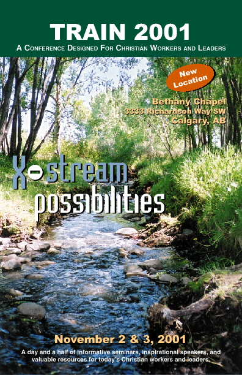

TRAIN Conference 2001
|
TRAIN Conference 2002
|
|
The TRAIN 2001 conference is now over. We trust and pray that you found encouragement in the Lord, having received something specific to take back to that place where you are the server, and we look forward to doing more for you in 2002. Click here for X-stream information! Website last updated: 2001/11/03 |
Consider joining our team. Serving on the TRAIN committee is an opportunity to serve -- however, as in most serving opportunities, it is truly more blessed to give than receive. You will walk away encouraged, challenged, rejuvenated, refreshed with more ideas and resources, and, most of all, new friends. |